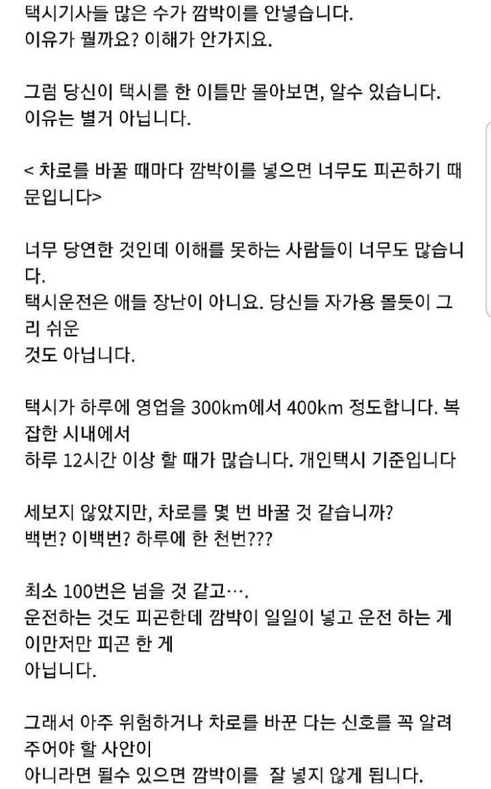
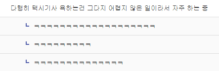

세상 어떤 개병신이 일할때 번거롭다는 이유로 지맘대로 편하게 일을 쳐하고 안짤리지?
심지어 도로교통법상 정해져 있음 ㅋㅋ
지들 멋대로 월권 휘두르는건데 난 걍 싹다 신고함
택시면 귀찮아도 무조건 신고함 ㅋㅋ
하루 일당 공치면 고쳐짐
저도 택시는 줮같아서 양보안함 ㅇㅇ
그래서 맨날 차선을 애매히 밟고다님
대부분의 택시 기사새끼들은 걍 사람새끼들이 아님 ㅋㅋ 깜박이만 안키면 이런소리 안하지 빨리빠지는 차선으로 빠질려고 아예 차선을 물고 타는데 뒤에서 옆으로 속도내서 지나갈라치면 차선물고 견제해대는데 진짜 바주카로 쏘고싶음
븅신 택시들은 왜 늘 차선에 한발 걸치고 다니는거냐? ㅈ같은 놈들이 존나 천천히 가는데 두차선을 먹고 있어서 제낄수도 없게 함
방향지시등 안키는 애들 보면 이젠 그냥. 아 왼손이 없구나 생각하는 중
그래서 보는 족족 상품권 보내드리는데 손님 한명이라도 더 태우라고…근데 신고 넣는것도 참 귀찮다
그것도 귀찮으면 숨10분만 참으면 해결됨
에궁 기사님 하루에 2만번 숨 쉬는것도 힘드실텐데 하루에 숨 144 번만 쉬세용...
피곤하면 하지마 이쒸
일부(90%)만 저러는데 착한 기사님들만 욕먹내 ㅜ ㅜ
이면도로에서도 깜박이는 필수임, 보행자도 교차로에서 이차가 어디로 가는지 알아야 비켜주던 먼저가던 할수있음 근데 대부분 깜박이 안넣지 그럼 지도 서있고 나도서있고
버스기사도 걍 깜빡이 넣지말자 하자 걍 다 뒤지자 씨벌ㅋㅋㅋ
버스는 시발 비깜을 안끄잖아
버스 깜빡이 넣지않기vs택시 비깜 안끄기 어떤거 택하겠음?
둘다 좆같음. 굳이굳이 따지자면 택시가 미세한 차이로 더 좆같을 뿐임 그나마 버스는 버정에 서니까
택시 기사일은 다른 업종에 비하면 애들 장난만도 못한 수준 아님?
괜히 택가놈이란 말이 안나오는게 아니지
택시는 아닌데 칼치기 할때 아예 그냥 비깜 키고 하는 애도 있더라 ㅋㅋㅋ 무슨 무적버튼인줄
ㅇㅇ 그래서 다른차들은 깜박이 켜거나, 안켜도 들어올것같은 느낌 들면 속도줄여서 양보하는데. 택시새끼들 그럴눈치보인다? 바로막아버리지.
나 이거보니 떠오르네 택시 브레이크 밟으면 실내등 켜지게 튜닝한택시 ㅋㅋ
뭔가 했다 처음에 ㅋㅋㅋ
프로그래머가 키보드 누르는게 피곤하면, 프로그래머 하는게 맞냐 ?
목사가 성범죄가 많은건 사람을 많이봐서 꼴리기 때문이라고 하겠노
크락션은 존나 잘누르던데
담배 쳐 피느라 손 내밀고 있어서 깜빡이 안 켜고 걍 들어오더라 씨발년이
숨도 쉬지마 그럼
현재 깜빡이(방향지시등)를 켜지 않고 차선을 바꾸다 적발되거나 블랙박스로 신고당하면 벌점 없이 승용차 기준 3만 원의 범칙금만 나오는데, 올해 8~9월동안 계도 기간지나고, 법이 좀 더 바뀔 예정이거든? 이 개정안이 최종 통과되면 오는 10월 1일부터 집중 단속과 함께 벌점도 부과될 예정이니 많은 신고바란다.
요약 : 지금 저거 신고하면 벌금 3만원 -> 10월쯤에 법 바뀌고 강화되는 벌점 10점도 부과됨. (40점이면 면허정지)
가끔 매너 운전하는 택시기사 보면 인지부조화가 옴
이상하네 뭐가 잘못됐나
기술이 발전하면 차선바꿀때 깜빡이안키는 그즉시 자율주행으로 바뀌면서 안전벨트 잠구고 목적지 갈때까지 고문시켜야함
나도 귀찮아서 택시는 양보 안해줌 ㅇㅇ